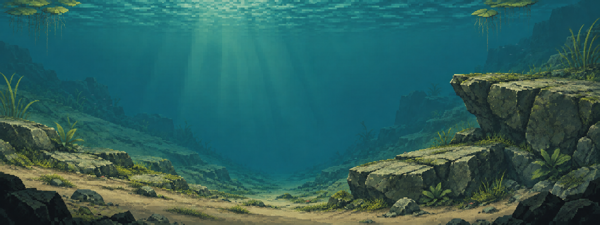
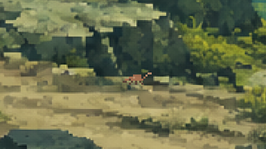
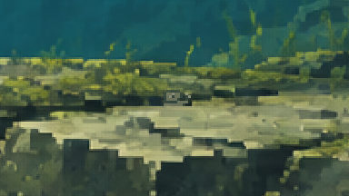
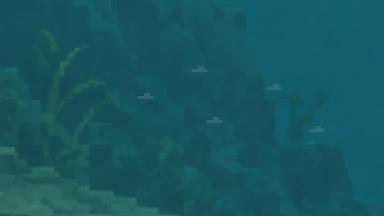
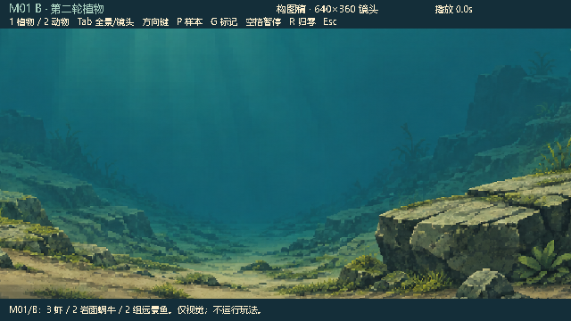
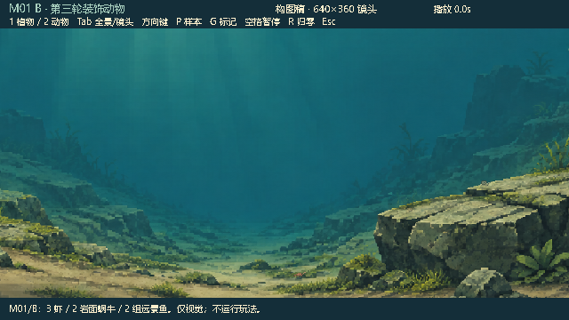

WATERGEN / DECORATIVE FAUNA / ROUND 03
岩棚上的蜗牛，坡脚间的小虾。
B 方案植物底图原样保留。3 只小虾沿坡脚与沟底短移，2 只蜗牛停在两级岩棚上，两组远景小鱼在左岸外侧和右上方缓慢游动。它们是独立像素精灵层，避开中央活动区，不响应食物、鱼钩或抄网。

连续动画可通过报告中的启动命令打开。原生预览支持开关动物、暂停与时间归零；网页按钮比较固定时间的捕获结果。
查看通用分层约定（原 A 示例）：明确背景、前景装饰，以及待绑定真实对象的交互外观；原 A 编号不直接对应 M01/B。当前样片尚无玩法交互。
局部近看 · 3 倍像素放大



同镜头可读性对照


这些是固定识别样本，没有运行比赛模拟。动物使用 M01/B 构图的美术挂点，尚未适配真实生成地图。背景植物保持静态；本轮只有新增动物在独立预览中运动。